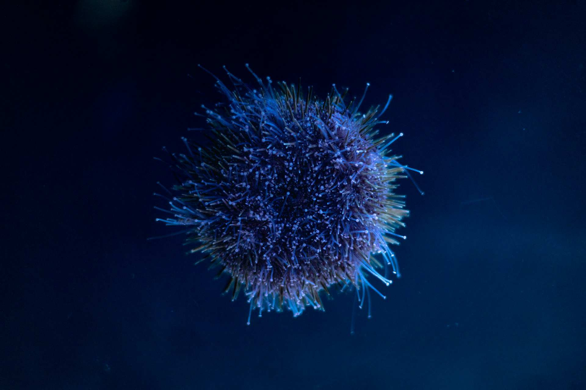

چطور سیستم ایمنی بدن را تقویت کنیم؟
سیستم ایمنی بدن، سربازان دفاعی بدن در برابر بیماریها هستند. با تقویت این سیستم، میتوانید از سرماخوردگیهای ساده تا بیماریهای جدیتر پیشگیری کنید. در این مقاله از دانشنما، به زبان ساده و بر اساس منابع معتبر علمی، توضیح میدهیم که چطور سیستم ایمنی بدن را تقویت کنیم.
سیستم ایمنی بدن چیست؟
سیستم ایمنی، شبکه پیچیدهای از سلولها، بافتها و اندامها است که بدن را در برابر عوامل بیماریزا (ویروس، باکتری، قارچ) محافظت میکند.
اجزای اصلی سیستم ایمنی:
- گلبولهای سفید: سربازان اصلی بدن
- غدد لنفاوی: فیلتر کردن مواد مضر
- طحال: تولید گلبولهای سفید
- تیموس: بلوغ سلولهای T
- مغز استخوان: تولید سلولهای ایمنی
عوامل تضعیف سیستم ایمنی
| عامل | تأثیر |
|---|---|
| کمخوابی | کاهش سلولهای کشنده طبیعی |
| استرس مزمن | افزایش کورتیزول، تضعیف ایمنی |
| تغذیه نامناسب | کمبود ویتامین و مواد معدنی |
| کمتحرکی | کاهش گردش سلولهای ایمنی |
| سیگار و الکل | آسیب به سلولهای ایمنی |
| چاقی | التهاب مزمن |
۱. تغذیه سالم داشته باش
تغذیه، مهمترین عامل در تقویت سیستم ایمنی است. این مواد مغذی را حتماً در رژیمت بگنجان:
ویتامین C:
- پرتقال، لیمو، کیوی
- فلفل دلمهای
- کلم بروکلی
ویتامین D:
- نور خورشید
- ماهی چرب (سالمون، تن)
- تخممرغ
ویتامین E:
- مغزها و دانهها
- اسفناج
- آووکادو
روی (Zinc):
- گوشت قرمز
- حبوبات
- مغزها
سلنیوم:
- ماهی
- تخممرغ
- مغزها
۲. خواب کافی داشته باش
خواب، زمان ترمیم و تقویت سیستم ایمنی است. در طول خواب، بدن سایتوکینها (پروتئینهای ایمنی) ترشح میکند که با عفونت مقابله میکنند.
هدف: ۷ تا ۹ ساعت خواب در شب.
۳. ورزش منظم کن
ورزش منظم و متوسط، سیستم ایمنی را تقویت میکند. چون:
- گردش سلولهای ایمنی را افزایش میدهد
- التهاب را کاهش میدهد
- استرس را کم میکند
توجه: ورزش شدید و طولانی (مثل ماراتن) میتواند سیستم ایمنی را موقتاً تضعیف کند.
۴. استرس را مدیریت کن
استرس مزمن، هورمون کورتیزول را افزایش میدهد که سیستم ایمنی را تضعیف میکند.
راههای کاهش استرس:
- مدیتیشن
- تنفس عمیق
- ورزش
- وقت گذراندن با دوستان
۵. آب کافی بنوش
آب، به گردش خون و دفع سموم کمک میکند. کمآبی، سیستم ایمنی را ضعیف میکند.
هدف: ۸ تا ۱۰ لیوان آب در روز.
۶. سیگار و الکل را کنار بگذار
سیگار و الکل، سلولهای ایمنی را از بین میبرند و خطر عفونت را افزایش میدهند.
۷. بهداشت را رعایت کن
شستن دستها، یکی از سادهترین راههای پیشگیری از بیماری است.
- قبل از غذا خوردن دستها را بشوی
- بعد از توالت دستها را بشوی
- از تماس دست با صورت پرهیز کن
۸. وزن سالم داشته باش
چاقی، التهاب مزمن ایجاد میکند که سیستم ایمنی را ضعیف میکند. حفظ وزن سالم، ایمنی بدن را تقویت میکند.
۹. پروبیوتیک مصرف کن
پروبیوتیکها (باکتریهای مفید) به سلامت روده کمک میکنند. روده سالم، سیستم ایمنی قویتری دارد.
منابع پروبیوتیک:
- ماست
- کفیر
- ترشی
- مکمل پروبیوتیک (با تجویز پزشک)
۱۰. واکسن بزن
واکسنها، سیستم ایمنی را آموزش میدهند تا با بیماریهای خاص مقابله کند. واکسن آنفولانزا، ذاتالریه و... را طبق توصیه پزشک بزن.
اشتباهات رایج در تقویت ایمنی
- مصرف بیرویه مکمل: مکملها فقط با تجویز پزشک
- ورزش شدید: ایمنی را موقتاً تضعیف میکند
- رژیمهای سخت: بدن را ضعیف میکند
- نادیده گرفتن خواب: خواب، پایه ایمنی است
- استرس مزمن: ایمنی را نابود میکند
پرسشهای متداول
چه ویتامینهایی برای تقویت ایمنی بدن مفیدند؟
ویتامین C، ویتامین D، ویتامین E، روی و سلنیوم از مهمترین مواد مغذی برای تقویت سیستم ایمنی هستند.
آیا ورزش سیستم ایمنی را تقویت میکند؟
بله، ورزش منظم و متوسط، گردش سلولهای ایمنی را افزایش میدهد و التهاب را کاهش میدهد. اما ورزش شدید و طولانی میتواند ایمنی را تضعیف کند.
آیا استرس سیستم ایمنی را ضعیف میکند؟
بله، استرس مزمن هورمون کورتیزول را افزایش میدهد که سیستم ایمنی را تضعیف میکند.
آیا مکمل ویتامین C ایمنی را تقویت میکند؟
ویتامین C از غذاهای طبیعی بهتر جذب میشود. مکمل فقط در صورت کمبود، با تجویز پزشک توصیه میشود.
آیا خواب در تقویت ایمنی نقش دارد؟
بله، خواب کافی باعث ترشح سایتوکینها میشود که با عفونت مقابله میکنند.
منابع
- سازمان بهداشت جهانی (WHO)
- دانشگاه هاروارد - منبع تغذیه
- کلینیک مایو
- مرکز کنترل و پیشگیری از بیماریها (CDC)
جمعبندی
تقویت سیستم ایمنی بدن با تغییرات ساده در سبک زندگی به دست میآید. با تغذیه سالم، خواب کافی، ورزش منظم، مدیریت استرس، نوشیدن آب کافی و رعایت بهداشت، میتوانید سیستم ایمنی بدنتان را تقویت کنید. به یاد داشته باشید که پیشگیری، همیشه بهتر از درمان است.
اگر به مباحث علمی و سلامت علاقه دارید، پیشنهاد میکنیم این مقالات دانشنما را هم مطالعه کنید:
← بازگشت به صفحه اصلی
دیدگاهها